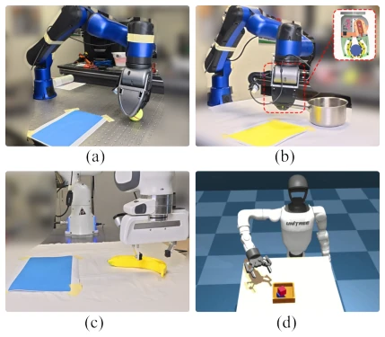
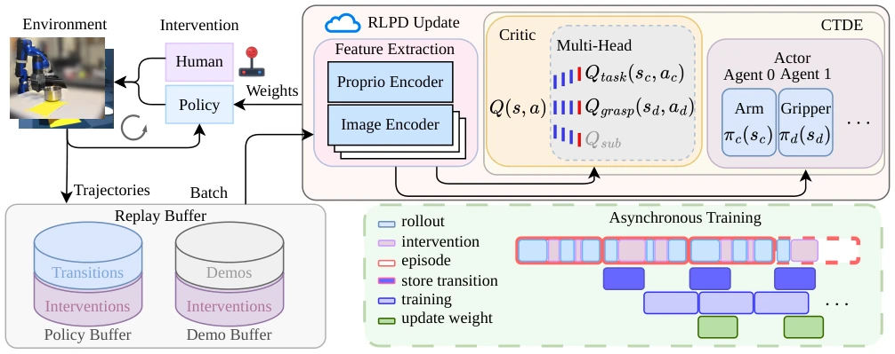
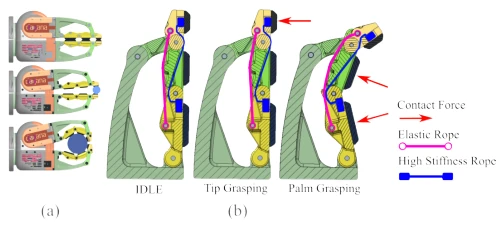
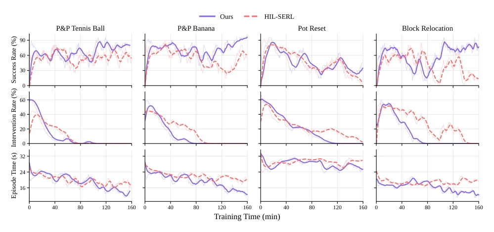
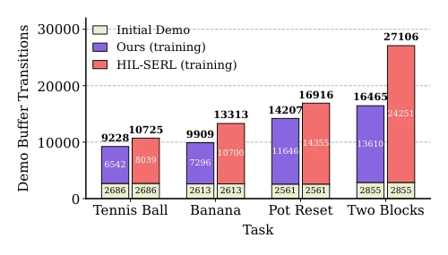

This paper performs a "thorough cleanup" on real-world online reinforcement learning (RL), discarding old approaches that perform well in simulation but "crash" when deployed on real hardware. The authors do not pursue flashy end-to-end large models but instead practically combine "Centralized Training with Decentralized Execution" (CTDE) and "Hybrid Reward Architecture" (HRA) to specifically address the two major ailments of "multi-agent non-stationarity" and "sparse rewards". Although it does not boast "general intelligence" like some VLA papers, it indeed elevates success rates from "barely passing" to "excellent" on specific tasks such as tennis, banana, and pot reset, especially the block repositioning task which improved from 25% to 95%, essentially a resurrection. However, this method has high hardware requirements and still relies on human experts constantly "putting out fires" (intervening), remaining distant from true "unmanned" operation. Overall, this is a solid work that transforms RL from a "toy" into a "tool"; while not sufficiently sexy, it is sufficiently effective.
Although real-world online RL can avoid the Sim-to-Real gap, it faces two major pain points: first, existing methods (e.g., SERL [12], HIL-SERL [13]) are typically limited to very small domain randomization ranges (e.g., 2-8cm), leading to poor generalization of policies in real complex environments; second, joint optimization of mixed action spaces (continuous manipulator + discrete gripper) easily triggers non-stationarity issues, causing unstable training. Furthermore, real-world RGB observations have high noise and task rewards are sparse, making traditional single-head Critics difficult to converge. Previous attempts either discretize continuous actions losing precision or optimize independently causing difficulty in credit assignment. This paper aims to solve how to achieve sample-efficient and stable mixed action space RL training under large-scale domain randomization (5-25 times that of predecessors), particularly addressing the challenges of visual noise and sparse rewards.

Fig. 1. Experimental tasks overview. (a) A pick-and-place tennis ball task with a custom manipulator; (b) A pick-and-place banana task with a custom manipulator and a compliant gripper; (c) A pot reset task with Franka arm; (d) A block relocation task with Unitree G1 and robotiq gripper
The overall framework is based on the RLPD (Real-World Online RL with Prior Data) process, adopting an asynchronous training mode: local Actor collects data, cloud Critic updates. The core innovations lie in two points: 1. CTDE Architecture: Decoupling the policy into a continuous Cartesian pose Actor and a discrete gripper Actor, both sharing a centralized Critic during training but independent during execution. This utilizes global information to evaluate joint actions, solving the non-stationarity problem caused by multi-Agent simultaneous updates, while retaining the flexibility of decentralized execution. 2. Hybrid Reward Architecture (HRA): Addressing real visual noise, decomposing the Critic into a "task head" and a "grasp head". The task head regresses sparse task rewards, the grasp head regresses dense grasp rewards based on potential energy. This decomposition reduces the variance of value estimation, making the Critic more stable under noisy RGB inputs. Additionally, for the discrete gripper, the authors rewrote the Actor loss function, utilizing the decomposed Q-values (Q_task + λ_g * Q_grasp) for optimization, and introduced RMSNorm to improve efficiency. The entire system is also paired with an adaptive flexible gripper design to enhance the robustness of physical interaction.

Fig. 2. Overview of training framework. Our online RL framework employs a reward-decomposed multi-head critic with multi-agent CTDE training. During training, a human expert provides demonstrations and corrective interventions via teleoperation, while intervened transitions replace the original policy actions and are stored alongside autonomous experience in a shared replay buffer. Training is asynchronous: a cloud-based learner continuously updates the actor–critic, and deployed actors periodically synchronize the latest policy parameters, following the training paradigm of SERL [12] and RLinf [10].

Fig. 3. Compliant gripper based on the modular 1-DoF revolute joint gripper design [30]. The left column shows the complete gripper in different configurations, during a fingertip grasp of a small object, and during an enveloping grasp of a larger object, from top to bottom. The enlarged finger diagrams show the extended configuration, the mechanically constrained fingertip-grasp configuration, and the passive adaptation that produces an enveloping grasp. though the standard Franka parallel gripper is effective for objects with simple grasping surfaces, its fixed finger geome- try and limited contact area make it difficult to achieve stable grasps on heavier objects and objects with more complex geometries. To overcome these experimental limitations, we developed a compliant two-finger gri
Experiments were conducted on two manipulators (custom manipulator, Franka Panda) and one simulated humanoid robot (Unitree G1), covering four tasks: tennis/banana grasp-place, pot reset, and block repositioning. The baseline is HIL-SERL [13], with domain randomization range expanded to 5-25 times. Results show that this method is significantly superior to the baseline in sample efficiency, with the number of required expert interventions reduced (e.g., tennis task from 80 times down to 69 times). In terms of success rate, the tennis task improved from 60% to 80%, the banana task from 60% to 90%, and the block repositioning task skyrocketed from 25% to 95%. Especially in the "pot reset" task where the baseline completely failed, this method achieved a 55% success rate. Experiments prove that the combination of CTDE and HRA effectively improves the robustness and convergence speed of the policy under large-scale randomization.

Fig. 4. Learning curves for our method and HIL-SERL [13] across all tasks, showing 20-episode running averages of success rate, intervention rate, and episode duration. Success rates increase until convergence or the training-time limit, while intervention rates and episode durations decrease; intervention rates ultimately reach 0%.

Fig. 5. Comparison of demo buffer transitions across tasks. Light green bars indicate the initial 20 episodes of teleoperated demonstrations, while purple and pink bars show additional human-intervention transitions collected during training. 2) Performance under large-scale randomization Table II reports success rates over 20 evaluation episodes for all tasks, while Fig. 4 presents the corresponding training curves. After 160 minutes of wall-clock training on the real-world tasks, our method achieves the highest